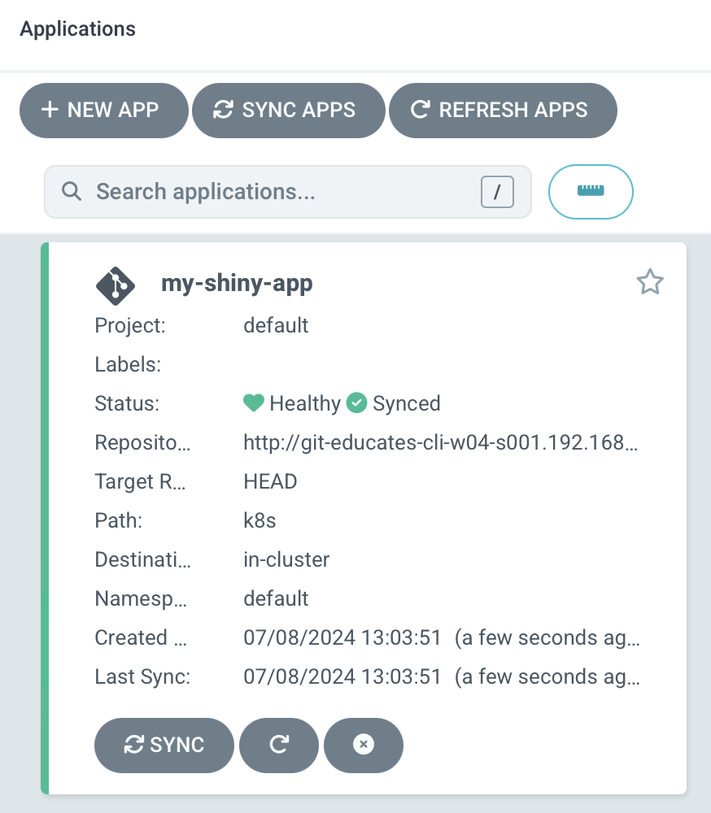

9: CD Setup
Now that we got ArgoCD working, let’s setup the CD, so we can start to deploy our app.
The first thing we need to do, is to give ArgoCD access to our git repository.
It can be done usig UI, CLI or yaml.
We will chose the last one.
Take a look at the argocd-repo.yaml file you have in your exercise folder.
title: Open argocd-repo.yaml
file: ~/exercises/argocd-repo.yaml
It should look something like this
apiVersion: v1
kind: Secret
metadata:
name: my-repo
namespace: argocd
labels:
argocd.argoproj.io/secret-type: repository
stringData:
type: git
url: http://git-educates-cli-w05-s003.192.168.50.243.nip.io/myapp.git
password: IXcklS71Ag85ULYDhPFt6zpMwvnqWema
username: educates-cli-w05-s003
All it does, is to tell ArgoCD that if it want’s to connect to the url under Stringdata (our git repo), then it need to use the suplied username and password.
Quite simple
This can also be done, for other types of repositories, where you need SSH keys etc. to access them.
Let’s apply the yaml file
command: |
kubectl apply -f ~/exercises/argocd-repo.yaml
We can verify it, by opening th ArgoCD UI, selecting settings -> Repositories and seeing our git repo has been added and is saying “successful”
Now that we can access the Git repository, we will add the app configuration.
Start by opening the app configuration.
title: Open argocd-app.yaml
file: ~/exercises/argocd-app.yaml
The file looks something like this
apiVersion: argoproj.io/v1alpha1
kind: Application
metadata:
name: my-awesome-app
namespace: argocd
spec:
project: default
source:
repoURL: http://git-educates-cli-w04-s001.192.168.50.243.nip.io/myapp.git
targetRevision: HEAD
path: k8s
destination:
server: https://kubernetes.default.svc
namespace: default
syncPolicy:
automated:
prune: true
selfHeal: true
It contains, all the info that ArgoCD need, to know, to be able to deploy the app.
This means :
- Git Repo
- Path in that repo, for the config files (ours is in the k8s folder, in the app folder)
- Namespace to deploy to
- Destination server (ArgoCD can handle multiple Kubernetes servers if needed)
- And how to deploy it (shoud it clean up, auto heal etc.)
Let’s apply it as well.
command: |
kubectl apply -f ~/exercises/argocd-app.yaml
Open the ArgoCD UI, and see a new app has been created. 
If you click on it, then you will see an overview, of all the componments it contains.

Depending on your screen resolution, it might be a bit small.
Use the zoom buttons, to make it fit.
ArgoCD now manages our application, and checks every 3 minutes, for changes in Git, and if there is any, it will update the application accordingly.
To see your app, open the “my-awesome-app” tab:
prefix: Open
title: my-awesome-app
name: my-awesome-app
url: http://my-awesome-app-educates-cli-w04-s001.192.168.50.243.nip.io